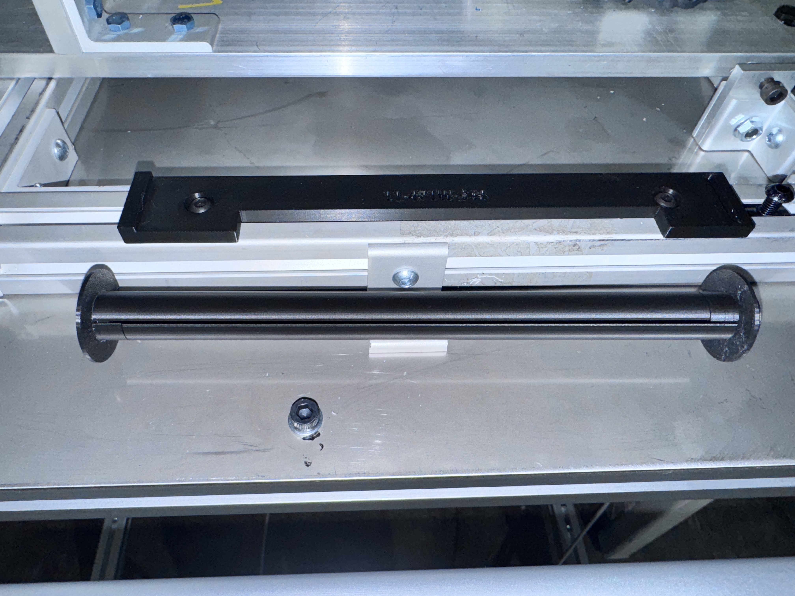

Internship / Automation
Kodak Thermal Ribbon Respooler
A Kodak Alaris internship project that turned a manual ribbon defect-isolation workflow into a compact respooling machine with PLC control, encoder tracking, HMI input, and production-oriented design choices.
Open project page